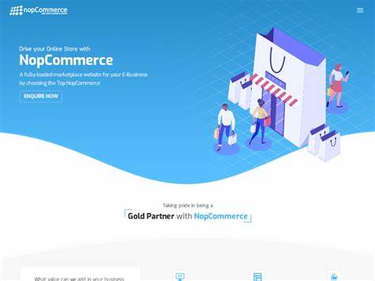

Hi, my name is Mohammed Abid Ali!
ABOUT ME
Quality
Programming
Data & APIs
Backend
Who am I?
I am a Software Development Engineer in Test. Proficient in Java based Selenium.
Knows JUnit, TestNg, and BDD using Cucumber framework.
I have worked as a junior Automation Test Engineer where I have extened the functionality of legacy code.
I have worked as a Senior Automation Test Engineer
directly with the architect and wrote custom libraries.
I have a good know how of setting up a framework from scratch.
PORTFOLIO
-
InfosysSoftware Automation Test Analyst
- Developed and maintained automated regression test cases using Selenium WebDriver implementing BBD using Cucumber framework. Managed framework and implementation of new behaviors as per the requirements
- Performed Web Application testing on the project operated within an agile environment and participated in scrum and sprint meetings. Performed Smoke Test, Positive test, Regression Test. Developed custom libraries for automation using Java
- Handled Sanity testing and running automation scripts and updating Jira and Confluence with the results acquired. This significantly reduces the time, effort, and capital for Sanity tests which reduced the working load on the manual testing team of 8 members.
- Written ‘Dynamic X-paths’ for web elements where DOM kept on changing and incorporated in Page Object Model. Written test cases for database validation using JDBC and SQL query.
-
I-Net broadbandAutomation Test Analyst
- Prepared Test Scenarios, Test Cases, and Test Scripts using JUnit and TestNG,. Reports and documentation for manual and automated testing.
- Selected the Test Cases to be automated and performed functional testing of the front-end using Selenium and created Data Driven framework. Regression testing was performed after each build release using Oracle HCM Cloud.
- Perfromance testing using JMeter and API testing using Postman.
-
NOP Commerce automationFramwork Design. Contribution to open source
- Designed and developed a robust Hybrid Selenium and Cucumber-based framework following Behavior Driven Development (BDD) principles from scratch. Implemented the framework with the Page Object Model concept in mind. This serves as a STARTER CODE for anyone implementing BDD using Cucumber and JUnit.
- Implemented the framework using Selenium, Cucumber, Java, Gherkins, JUnit, and Log4J. Used Jenkins for CI/CD. Used SOLID principles for class design
- Implemented a library from scratch that takes care of StaleElementReferenceException.
- Made sure that the project is robust, platform-independent, scalable, and readable for future adaptations and additions.
 -
Flipkart automationData Driven Framework Design
- Created a framework from scratch and implemented features using Selenium BDD Cucumber framework for an Indian E-Commerce website. Validated dynamic web tables, and database, uploading and downloading files
- Wrote a custom library which return a absolute dynamic X-path for a web table.
- Web service automation testing using SOAPUI. REST API testing Postman